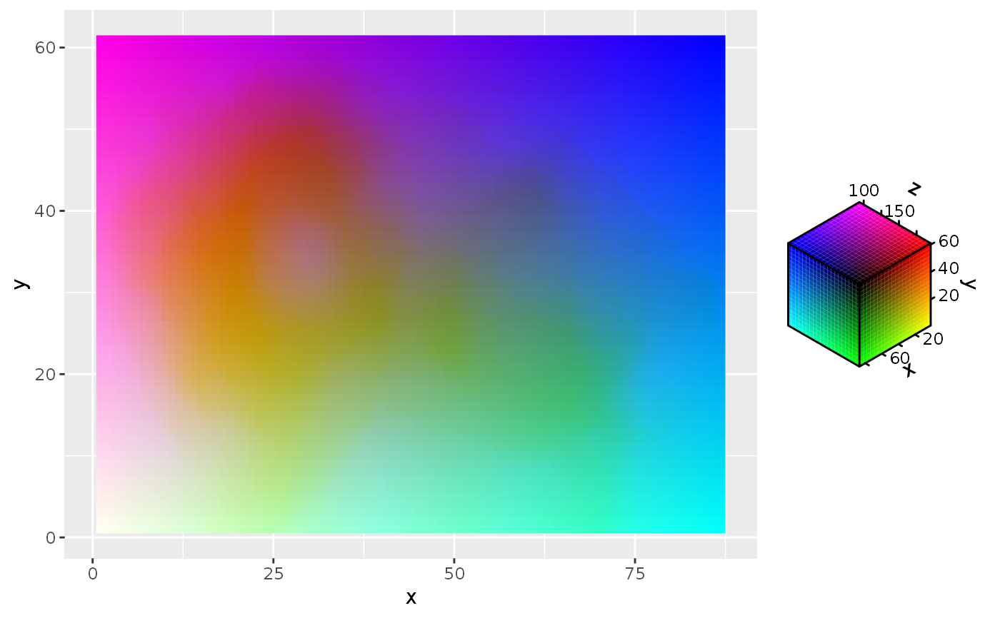
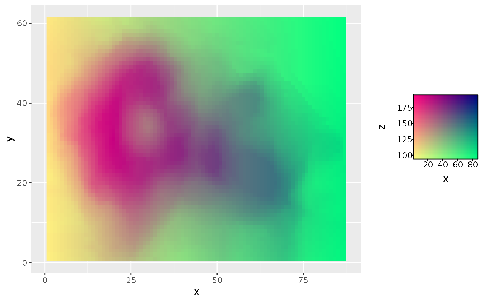
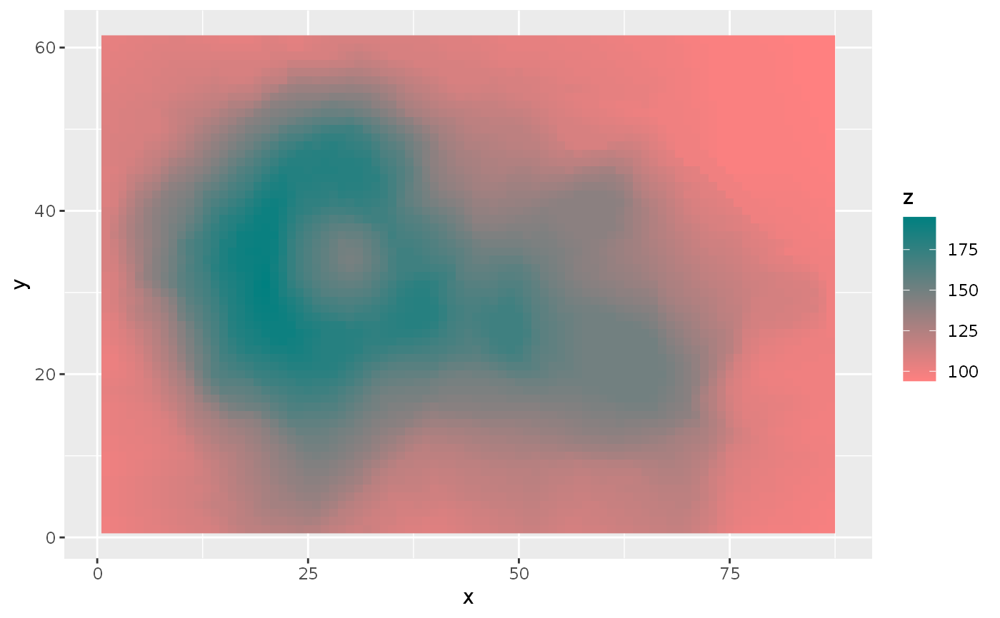

guide_chromatic.RdThis 'guide' is not really a guide, but a decision function for chromatic scales. It chooses the guide based on the number of channels a chromatic scale has seen data from. It is the default guide for the chromatic scales.
guide_chromatic( title = waiver(), ..., available_aes = c("colour", "color", "fill") )
| title | A character string or expression indicating a title of guide.
If |
|---|---|
| ... | Captures arguments to pass down to the constructor of the chosen guide. |
| available_aes | A vector of character strings listing the aesthetics for which a colourbar can be drawn. |
A chromatic_guide S3 object.
This 'guide' chooses in the following ways based on the number of channels for which data is available.
chooses guide_none()
chooses guide_colourbar2()
chooses guide_colourrect()
chooses guide_colourcube()
chooses guide_colourcube() with 3 channels
The scale_chromatic page for chromatic scales.
Other guides for chromatic scales:
guide_colourbar2(),
guide_colourcube(),
guide_colourrect()
# Setup example plot df <- data.frame( x = c(row(volcano)), y = c(col(volcano)), z = c(volcano) ) g <- ggplot(df, aes(x, y)) + guides(fill = guide_chromatic()) # When the colour space has 3 defined channels, it makes a cube g + geom_raster(aes(fill = cmy_spec(x, y, z)))